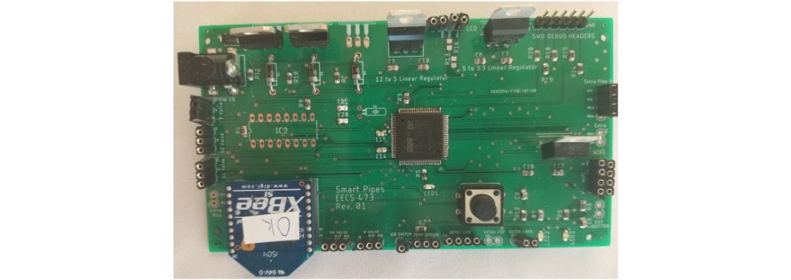
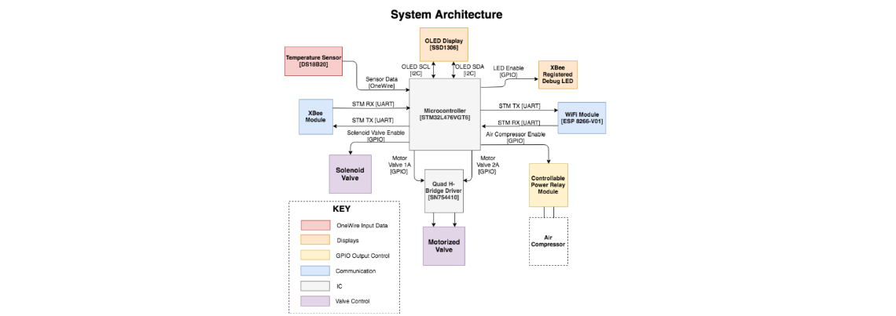
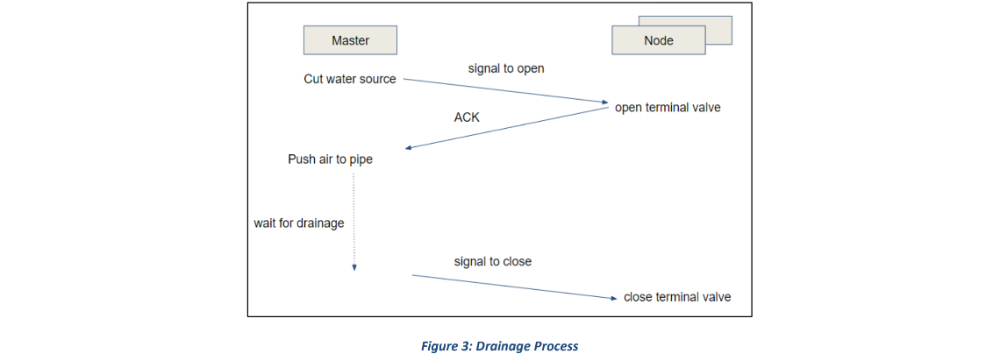
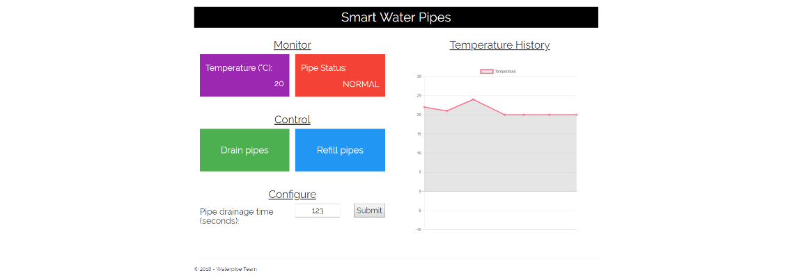
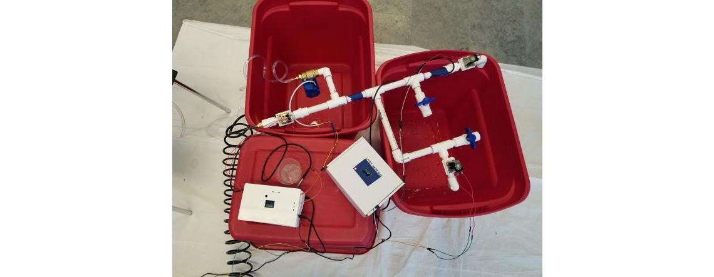

Overview
The following project was done as part of the senior design course, EECS 473, offered at the University of Michigan, Ann Arbor.
As outdoor temperatures plummet, household pipes can be exposed to extremely cold conditions. These lower temperatures can cause the water in pipes to freeze.
This results in an increase in pressure in the pipes, which can cause them to burst.
In the event that a homeowner travels during the cold holidays, they are expected to keep the water running to prevent this from happening. However, this solution
leads to a waste of water and increased utility costs.
This solution is an alternative, cost-saving approach to save pipes from bursing in extreme cold temperatures. The embedded system was made so that it can easily
be integrated into different kinds of homes without runing the structural integrity of the pipes.
Hardware
There were two types of PCBs created for this project: Main PCB and a Node PCB
The Main PCB (central device) is placed near the the point where water enters the house's pipes (usually at the basement). This PCB contains logic to
control the main water supply as well as turns on the air compressor to help push air and drain the pipes. The Main PCB also has an
ESP8266 WiFi
module
, which is used to send updates to a web server on the temperature of the pipes and if the water has been drained. The
server can also send information
back to the ESP module
in case the user chooses to drain the water in the pipes manually instead.
The Node PCBs (peripheral device) are ideally placed at every floor of the house, and contains logic to control solenoid valves which help to drain water.
The Node PCBs get instructions from the Main PCB to open or close their respective valves using Xbee communication protcols.
Both PCBs interface with a temperature sensor, which is placed externally on the pipes. Each Node PCB records temperature and reports it back to the Main PCB.
At any point a temperature sensor value is recorded below the threshold where pipes are at risk (between -4℃ and -6℃), the Main PCB sends instructions
to open valves so the water can be drained. Both PCBs also include power support for both wall adapter as well as LiPo battery. We made this design decision because
there is a strong correlation between hazardous temperatures and power outages. If the PCBs were just powered with the adapter, the system would shut off in the
event of a power outage. With our design, the LiPo battery is charged when powered through the adapter, and takes over running the system if the power were to go out.
A single PCB was designed, with each Node PCB using a subset of the all the peripherals on the board. The STM32L476VGT6 microcontroller was chosen to interface
with all the peripherals. We chose this processor due to its low-power support and ARM Cortex M4 processor, which supports floating point math for our temperature
sensor calculations. Since this design supported both power adapter and LiPo for power, we had to ensure proper trace width and regulators to handle 3 different
power supplies: 12V, 5V, and 3.3V. To save on power consumption, we chose to use a switiching regulator rather than linear to convert the 12V from
the adapter to 5V.

Software
The following diagram is an overview of our system and all the peripherals attached:

Each peripheral functioned as follows:
- XBee: Sends information to Node PCB on which valves need to open in case water needs to be drained. Nodes also use Xbee to confirm valve status back to Main
- ESP8266: Updates web server with temperature data and receives instructions on if manual drain is needed from server
- Temperature Sensor: Uses OneWire (device specific interface) to send data, which can be converted to a temperature value
- Valves: Controlled through GPIO. Motorized valves also use an H-Bridge driver for bi-directional control
-
Air compressor: We bought a special adapter which can control power output based on a switch. That switch was toggled through GPIO.
When the microcontroller sent an active high signal to the adapter, the air compressor turned on and released air
- OLED Display: Displayed the current temperature read from the sensor and connection status
The system functioned in a FreeRTOS environment using the Rate Monotonic (RM)scheduling algorithm. Every 10 seconds (highest priority),
the PCBs collected temperature data. Every 20 seconds (middle priority), the Main PCB initiated communications with each Node PCB.
Every minute (lowest priority), the OLED display was updated with the latest temperature and connection status.
If the temperature result is less than the threshold or the ESP receives a manual drain command, the system is interrupted and goes into a special drain task
which preempts all other tasks and executes until completion (in a process known as priority inheritance).

The server hosted by the ESP8266 was written in C# and performed the following:
- Displays temperature of the lowest part of the pipe system
- Displays the current status of the pipes: Either normal or drained
- Push botton to manually drain the pipes, which will cause the embedded system to execute the drain task
- Push button to refill the pipes with water (due to time constraints, we were not able to implement this feature)
- Control the time allowed to stay in the drain task. Given the current system, there was no way to determine if all the water
was drained from the pipes before closing the valves. Therefore, we added this feature to ensure all water was drained

Final Packaging
The PCB, with all the components, was packaged into a 3D printed box to protect it from water damage
As part of the requirements for the class project, we demoed our project at the Michigan Engineering Design Expo. For the sake of the expo, we created
a small-scale prototype of our system with a Main PCB and a single Node PCB.

The system worked as intended, however it's important to note that future work would be done to further encase the wiring so that the connections are stable and
well protected from the surrounding environment.
Acknowledgements
This work was done with the help of my fellow teammates: Devesha Tewari, Chunan Ye, Yutian Chen, and Carl Wu